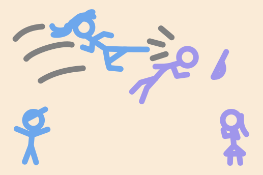

A2 · Pre-intermediate
Passive Voice
be + past participle — when the action or the thing is more important than the person who does it
Active vs passive — when to use each

Active: My sister beat that guy!
Passive: My brother was beaten by that girl!
Use the active voice when…
the doer is important or is the focus of the sentence
the sentence is clearer or shorter in active form
you speak or write in a direct, personal style — most everyday speech
Use the passive voice when…
the receiver, action or result is more important than the doer
the doer is unknown, obvious, or unimportant
you write in a formal, scientific, or news style
Compare the same idea in both voices:
active
Someone broke the window last night.
We don't know who broke it — awkward with "someone"
passive
The window was broken last night.
Natural — the doer is unknown, so we drop it
active
Researchers found a locked door.
Fine if the researchers matter to the story
passive
A locked door was found behind the bookshelf.
Better — the discovery is the interesting part, not who found it
active
Shakespeare wrote Hamlet.
The doer (Shakespeare) is the important, famous part
passive
Hamlet was written by Shakespeare.
Also correct — used when Hamlet is already the topic
Tip: if you can finish the sentence with "…but I don't know who" and it sounds natural, the passive voice is probably the better choice.
The passive keeps the tense
The passive does not change when something happened — only who we put first. The tense lives in be.
Check the meaning
Read the sentence. Answer the questions.
Form
The form of be changes with the tense. The past participle stays the same.
Look at the form
What is each part of the sentence? Drag a label (or tap a label, then tap a box). Compare the rows — what changes, and what stays the same?
Correct: 0 / 0
Two pieces, always: a form of be plus the past participle. Change the tense and only be changes.
Present simple passive
am / is / are + past participle
used for facts, routines, and general truths
Past simple passive
was / were + past participle
used for completed actions in the past
Present perfect passive
have / has been + past participle
used for past actions with a present result, or unfinished time
Summary
| tense | affirmative | negative |
|---|
| present simple | It is made here. | It isn't made here. |
| past simple | It was made here. | It wasn't made here. |
| present perfect | It has been made here. | It hasn't been made here. |
Common mistakes
Error hunt
Some sentences have a mistake. Some are correct! Tap a word — or a space between words — to fix it. Then press OK.
Done: 0 / 0